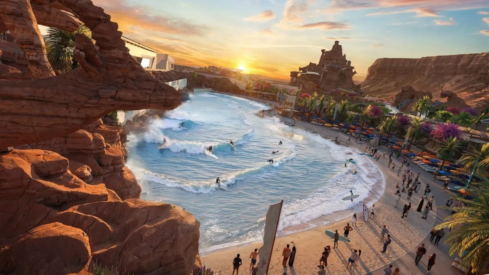
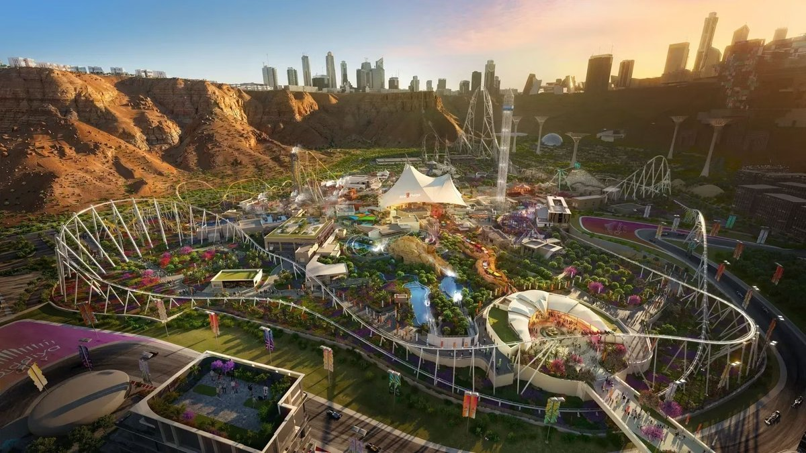
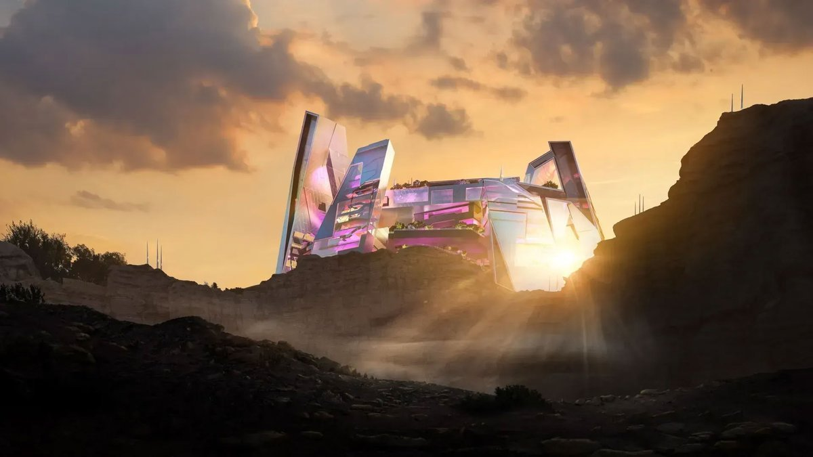
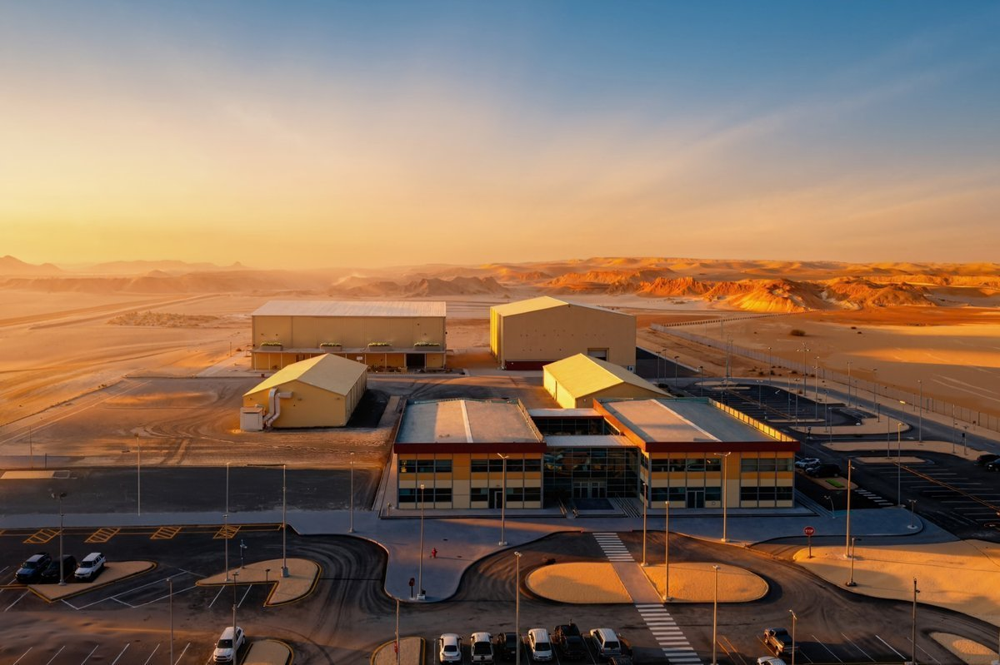
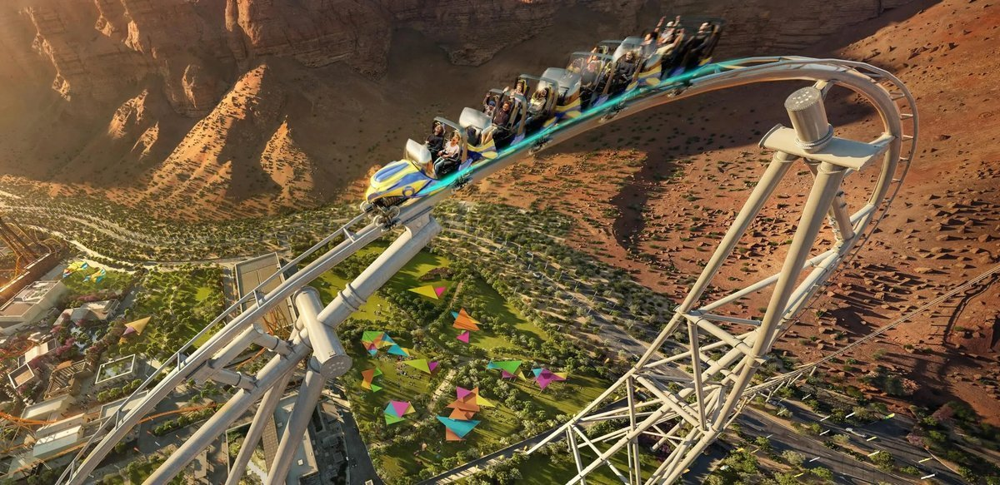

키디야 시티(Qiddiya City)는 사우디아라비아 정부가 추진 중인 대규모 엔터테인먼트·문화 복합 도시 개발 프로젝트로, 수도 리야드(Riyadh)에서 서쪽으로 약 40km 떨어진 지역에 조성되고 있다. 이 프로젝트는 관광과 여가 산업을 국가 성장 동력으로 육성하려는 사우디 비전 2030(Vision 2030)의 핵심 사업 중 하나로, 단일 관광 시설이 아닌 도시 단위의 엔터테인먼트 인프라 구축을 목표로 한다. 키디야 시티 개발은 사우디 국부펀드인 공공투자 펀드(Public Investment Fund, PIF)가 주도하고 있으며, 주요 엔터테인먼트 시설의 브랜드와 운영은 미국과 유럽 기업들이 담당하고 있다. 실제 건설과 기술 구현은 여러 국가의 기업이 참여하는 다국적 협력 구조로 진행되고 있다.


▲ 키디야 시티(Qiddiya City) 내 아쿠아라비아(Aquarabia)와 식스 플래그스(Six Flags) 구역 — 출처: 키디야 투자 회사(Qiddiya Investment Company)
키디야 시티는 현재 엔터테인먼트, 스포츠, 문화, 관광 기능을 아우르는 약 9개의 핵심 구역으로 구분돼 단계적으로 개발되고 있다. 테마파크를 중심으로 한 대규모 엔터테인먼트 시설을 비롯해 공연예술 및 라이브 엔터테인먼트 공간, 영화·영상 제작을 위한 스튜디오 시설이 조성될 예정이다. 이와 함께 e스포츠와 디지털 콘텐츠에 특화된 구역, 관광·휴양 시설, 향후 주거와 상업 기능이 결합된 도시 생활 구역도 포함된다. 각 구역은 서로 다른 기능을 수행하면서도 공연과 체험 요소가 유기적으로 연결되도록 설계돼, 방문객이 도시 전체를 하나의 통합된 콘텐츠 공간으로 경험할 수 있도록 구성된다.
문화 구역, 공연예술과 영화·영상 제작의 복합 거점
문화 구역은 공연예술 시설과 영화·영상 제작 인프라를 각각 조성한 구역으로, 창작과 제작이 이루어지는 환경을 지향한다. 공연예술 부문에서는 키디야 시티 공연예술센터(Qiddiya City Performing Arts Centre)가 중심 시설로 계획돼 있으며, 영화·영상 제작 부문에서는 플레이메이커 스튜디오(PlayMaker Studios)가 제작 거점으로 조성된다. 키디야 시티 공연예술센터는 현재 건설이 진행 중인 공연예술 시설로, 완공 시 약 3,000석 규모의 공연장과 야외 공연 공간을 포함할 예정이다. 플레이메이커 스튜디오는 약 200만㎡ 규모의 제작 단지로, 국제 규격의 사운드 스테이지와 대규모 야외 촬영 공간을 갖춘 목적형 스튜디오다. 제작 사무실과 워크숍, 기술 지원 시설을 포함한 통합 제작 환경을 제공한다. 스튜디오는 이미 완공돼 운영에 들어갔으며, 국제 영화 프로젝트의 제작이 진행 중이다.

▲ 공연예술센터(Performing Arts Centre) 조감도 — 출처: 키디야 투자 회사(Qiddiya Investment Company)

▲ 플레이메이커 스튜디오(PlayMaker Studios) 전경 — 출처: 키디야 투자 회사(Qiddiya Investment Company)
식스 플래그스 키디야 시티(Six Flags Qiddiya City) 공식 개장
키디야 시티 내 테마파크인 식스 플래그스 키디야 시티(Six Flags Qiddiya City)는 2025년 12월 31일 정식 개장했다. 이 시설은 미국의 대표 놀이공원 브랜드 식스 플래그스가 북미 지역 밖에서 처음으로 설계·운영하는 테마파크로, 총 28개의 놀이 기구와 체험시설을 갖추고 있다. 이 파크의 핵심 하이라이트는 롤러코스터 팔콘스 플라이트(Falcon's Flight)다. 해당 놀이기구는 약 4.25km에 달하는 트랙 길이와 최고 시속 약 250km, 최대 고도 약 195m 규모로 설계돼, 개장과 함께 세계 최고 수준의 기록급 롤러코스터로 주목을 받았다. 이 외에도 아이언 래틀러(Iron Rattler), 스핏파이어(Spitfire), 지로스핀(Gyrospin) 등 여러 대형 어트랙션이 파크 전반에 배치돼 있다.

▲ 롤러코스터 팔콘스 플라이트(Falcon's Flight) — 출처: 키디야 투자 회사(Qiddiya Investment Company)
키디야의 전략적 의미, 엔터테인먼트 산업을 위한 새로운 도시 실험
키디야 시티는 관광객 유치를 넘어, 엔터테인먼트와 문화 활동이 일상 속에서 이어지는 도시를 목표로 한다. 개별 시설을 중심으로 한 개발이 아니라, 도시 전체를 하나의 경험 공간으로 구성한 점이 특징이다. 또한 이 프로젝트는 리야드에 집중된 기능을 분산하면서, 엔터테인먼트와 문화 산업을 별도의 거점으로 육성하려는 전략의 일환이기도 하다. 이러한 개발 방식은 사우디 비전 2030이 내세운 관광 산업 다각화와 문화 산업 육성 전략을 실제 도시 공간에 옮긴 사례로 해석된다. 키디야 시티는 이 과정을 통해 사우디 문화·관광 산업이 앞으로 나아갈 방향을 가늠하게 한다.
사진출처 및 참고자료
키디야 투자 회사(Qiddiya Investment Company) 공식 웹사이트, qiddiya.com
식스 플래그스 키디야 시티(Six Flags Qiddiya City) 공식 웹사이트, sixflagsqiddiyacity.com
≪버라이어티(Variety)≫ (2025. 12. 05). Saudi Arabia's New PlayMaker Studios Launch With Production Underway on High-End Epic 'Unbroken Sword' Directed by Alik Sakharov, variety.com
≪걸프 뉴스(Gulf News)≫ (2025. 01. 14). How much will it cost to ride the world's fastest roller coaster at Saudi Arabia's Six Flags park?, gulfnews.com